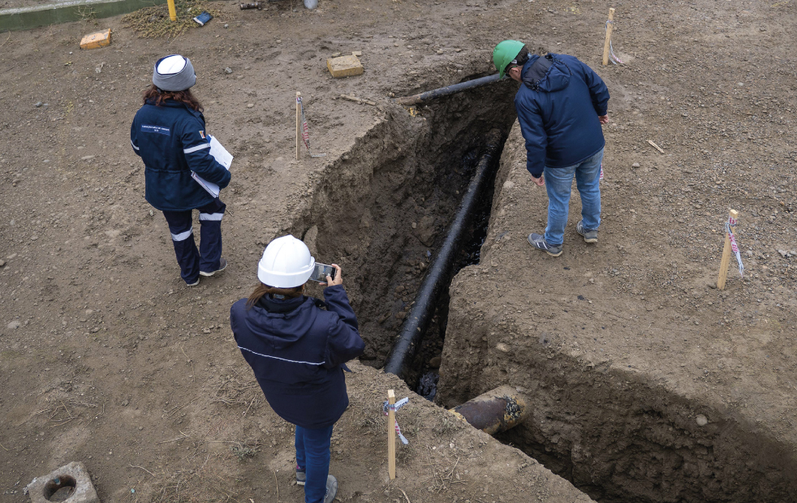

Se trata de pozos mal sellados, instalaciones deterioradas, derrames, residuos peligrosos y contaminación del suelo o del agua. También comprenden cualquier daño o afectación que represente un riesgo actual o potencial para las personas, los ecosistemas o el ambiente.
En Chubut, el problema adquiere una dimensión particular. La actividad hidrocarburífera lleva más de un siglo y dejó miles de pozos e instalaciones distribuidos en la Cuenca del Golfo San Jorge. Muchos fueron cerrados con técnicas antiguas, permanecen inactivos o nunca completaron las tareas necesarias para garantizar que no generen riesgos en el futuro. A medida que las grandes operadoras trasladan sus inversiones hacia otras cuencas, la identificación y remediación de esos pasivos se vuelve cada vez más urgente.
El problema no termina cuando deja de extraerse petróleo. El cierre de un pozo requiere sellado técnico, desmantelamiento de instalaciones, tratamiento de residuos, remediación de suelos y aguas y monitoreo posterior. Cuando esas obligaciones no se cumplen, el daño permanece en el territorio y el costo corre el riesgo de trasladarse a toda la comunidad.
¿Qué puede convertirse en un pasivo ambiental?
- • Pozos inactivos o abandonados: cuando dejan de producir y no fueron cerrados, sellados y remediados de acuerdo con las normas vigentes.
- • Derrames y fugas: pérdidas de petróleo, gas u otras sustancias que afectan el suelo, el agua, el aire o la vegetación.
- • Residuos de perforación: lodos, fluidos y sustancias peligrosas que permanecen sin tratamiento adecuado.
- • Instalaciones abandonadas: ductos, cañerías, tanques, baterías y otras estructuras que pueden deteriorarse, corroerse o seguir generando contaminación.
- • Suelos y aguas contaminadas: áreas afectadas por décadas de explotación que todavía requieren saneamiento y monitoreo.
- • La actividad en un pozo no termina cuando se extrae la última gota de petróleo. El proceso termina cuando se cierra de manera segura, se remedia el ambiente afectado y se comprueba que ya no existe riesgo para la comunidad.

¿Cómo impactan en
la vida de las personas?
Cuando un pozo o una instalación no son correctamente cerrados y remediados, las consecuencias pueden extenderse durante años y afectar directamente la vida cotidiana de la comunidad. La contaminación del suelo y del agua, los riesgos para la salud, las limitaciones para el uso futuro de la tierra y los costos económicos de la remediación terminan siendo asumidos por toda la sociedad.
El deterioro de la infraestructura abandonada, la posibilidad de derrames, filtraciones o emisiones y la necesidad permanente de monitoreo convierten a los pasivos ambientales en un problema que trasciende a la industria y compromete la calidad de vida de las generaciones presentes y futuras.
Cuando un pasivo ambiental no se remedia a tiempo, afecta no sólo los ecosistemas sino también la salud y la seguridad de las personas, el desarrollo de las ciudades y el futuro de las comunidades.
- • Salud pública: aumentan los riesgos asociados a la exposición a sustancias contaminantes y afectan la calidad de vida de las comunidades.
- • Agua y suelo: pueden contaminar cursos de agua, napas y suelos, comprometiendo su recuperación y sus usos futuros.
- • Fauna y biodiversidad: el deterioro del ambiente impacta sobre la flora, la fauna y el equilibrio de los ecosistemas.
- • Seguridad: pozos e instalaciones abandonadas representan riesgos por derrumbes, filtraciones, emisiones o accidentes.
- • Desarrollo urbano: limitan el crecimiento de las ciudades y dificultan nuevos usos del territorio.
- • Economía local: cuando las empresas no remedian los daños, los costos terminan recayendo sobre toda la sociedad.
- • Empleo: la remediación también representa una oportunidad para generar trabajo calificado y sostener el empleo durante la transición energética.

Los pasivos ambientales
son un desafío que condiciona
la salud, el ambiente, la economía
y el futuro de Chubut.
El problema es urgente
y la solución requiere participación.
Descargá el proyecto